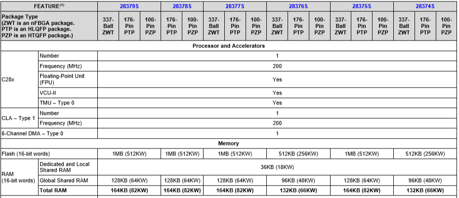
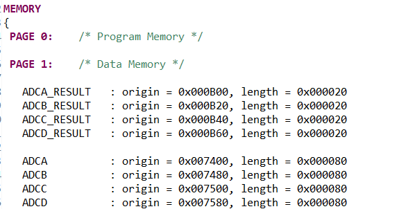

这里的CCS就是TI公司的Code Composer Studio 集成开发环境，所以这篇随笔也就是关于TI公司DSP开发过程中对于刚入门同学的一个常见问题了。
那作为一个初学者，对于CCS工程中的cmd文件首先应该是有些基础了解的，下面做一个简单的介绍：
.cmd 的专业名称叫链接器配置文件，是存放链接器的配置信息----给出了程序空间和数据空间的设置，及编译后各程序段在程序或数据空间的具体位置。一般情况下该文件主体部分为两个伪指令， MEMORY和SECTIONS。MEMORY用来配置目标存储器，SECTIONS用来指定段的存放位置。例如下面的格式：
实际上，（推测是基于便于管理的角度）TI把它分开了，一个对寄存器进行存储映射，因为同个系列的芯片寄存器都是一样的，这样一个cmd文件在该系列芯片的工程里都是可以通用的。
另外一个是对Flash, Ram进行存储分配，同个系列不同芯片有不同存储配置，所以他们的CMD也不一样。
例如2837xS系列芯片的不同芯片ram/rom配置如下表：

从上面可以看到，根据不同的需要，芯片的ram和rom(flash)有多有少，那么在cmd文件中也要针对性的调整，否则可能编译出来的文件无法正确烧写或者执行。
另外一个，顺便提一句的。在同一个芯片系列中相同的cmd文件，主要存放芯片寄存器地址信息，同学们会看到，在这个cmd文件中MEMORY指令中只有PAGE1的内容，就像下面这样：

为什么呢？这是因为，TI公司默认在MEMORY把PAGE0作为程序储存器，PAGE1作为数据储存器进行分配，分别有数据总线和程序总线进行访问。那么，所有芯片寄存器都属于数据空间，所以放在PAGE1，因此这个cmd文件里就只有PAGE1的内容了。